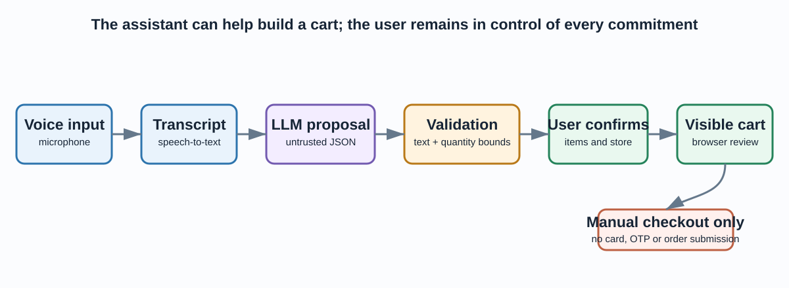
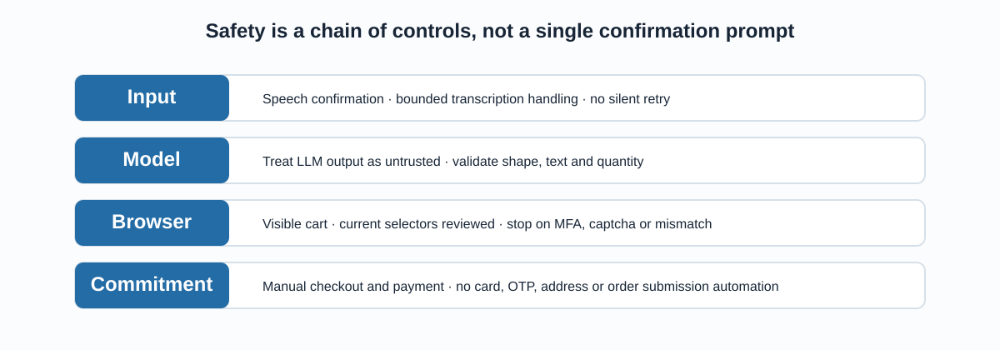

What the assistant is allowed to do
The assistant can transcribe a request, propose structured cart lines, validate those lines, ask for explicit confirmation and add confirmed items to a visible browser cart. It is not allowed to capture payment details, one-time codes, addresses, submit an order, or circumvent a retailer safeguard.

Each step has a purpose; no speech command alone authorises a transaction.
Why LLM output is never browser input by default
The validator admits only compact text fields and integer quantities from 1 to 100. It rejects arrays, nested values, booleans, empty text and oversized requests. This narrows the automation surface, but it cannot decide whether the selected retailer product is the one the user intended.
| Control | Protects against |
|---|---|
| Schema and text bounds | Malformed model output and oversized browser queries |
| Quantity bounds | Accidental or fabricated large cart quantities |
| Spoken/displayed confirmation | Speech-recognition and intent-matching mistakes |
| Visible cart review | Wrong item, price, substitution or availability |
Control layers

Reliable control requires multiple boundaries: no single validation rule can make browser automation safe.
How checkout is kept manual
The historical complete-payment method is preserved for learning provenance but is unreachable. The supported checkout guard returns a message directing the user to complete payment in the visible retailer UI, without collecting card number, CVV, OTP or address data.
Reproduce the safe checks
python -m venv .venv .venv\Scripts\Activate.ps1 python -m pip install -r requirements.txt Copy-Item .env.example .env python -m pytest -q python -m py_compile src/order_validation.py src/checkout_safety.py src/voice.py src/new.py src/voice_shop_openai.py
The tests cover validation and the manual-checkout guard. They do not invoke a microphone, OpenAI API, retailer login or live browser interaction. Put credentials only in the ignored .env file and keep automation disabled until it is explicitly reviewed and authorised.